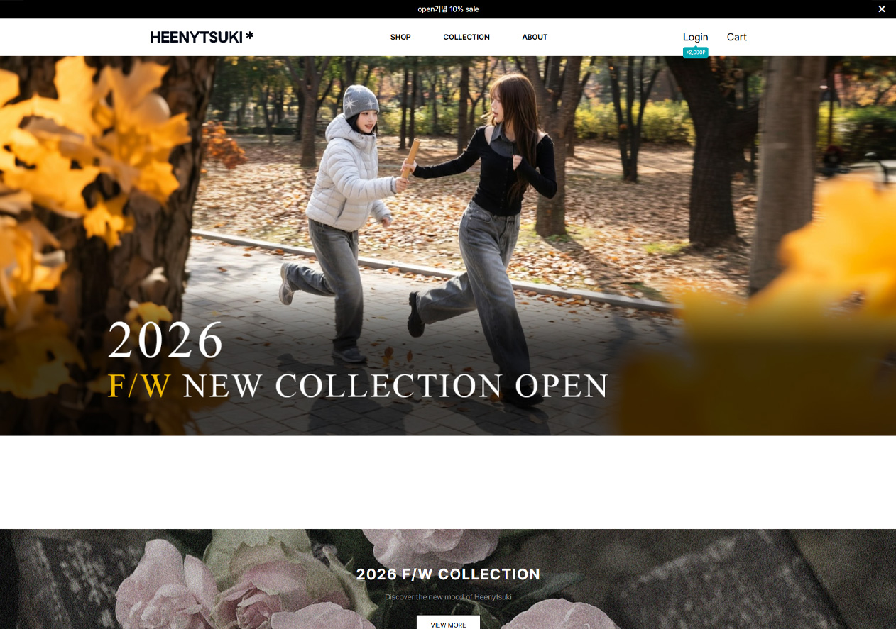
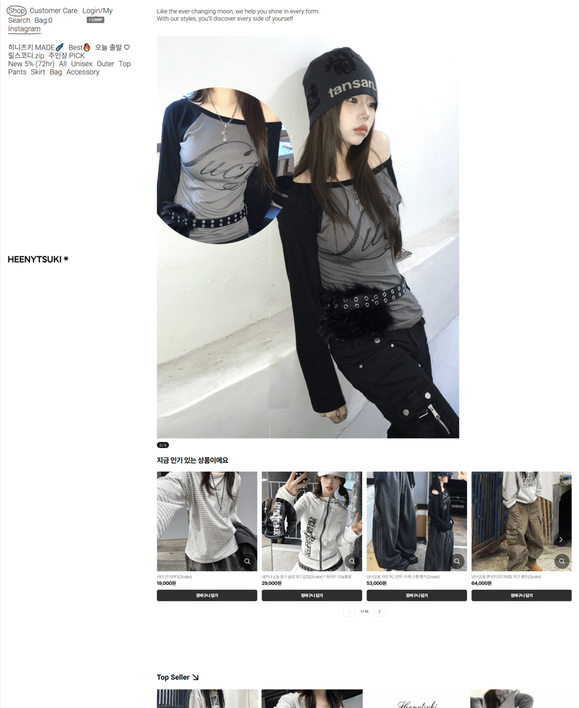

HEENYTSUKI 브랜드 웹리디자인
Hip · Romance · Vintage 무드를 기반으로 전개한 패션 브랜드 웹 프로젝트

- 프로젝트 HEENYTSUKI 브랜드 웹디자인
- 목적 브랜드 무드를 시각적으로 명확히 정의하고, 쇼핑몰 UX 구조 설계
- 컨셉 Hip · Romance · Vintage
- 타겟 개성 있는 스트릿 감성을 선호하는 20대 여성
- 범위 브랜드 기획 · 비주얼 아이덴티티 · 웹 레이아웃 · 상품 상세 구조
HEENYTSUKI는 힙한 스트릿 무드와 로맨틱한 디테일을 결합해, 감각적인 비주얼과 쇼핑 구조를 함께 설계한 브랜드 웹 프로젝트입니다.
기존 사이트는 상품 정보 구조가 복잡해 사용자가 상품을 탐색하기 어려웠습니다.
이를 해결하기 위해 상품 정보 구조를 재정리하고 이미지 중심의 레이아웃으로 UX를 개선했습니다.
단순한 상품 판매가 아닌,
브랜드 무드를 경험하고 소비하는 구조를 만드는 것이 목표였습니다.
히어로 비주얼과 무드 중심 레이아웃을 통해
‘이 브랜드는 어떤 분위기인가’를 먼저 인지하게 한 뒤,
자연스럽게 상품으로 연결되는 흐름을 설계했습니다.
Visual Mood
저채도 컬러와 스트릿 감성 이미지를 활용해
힙하면서도 감성적인 분위기 유지
Layout
룩북형 메인 구성 + 상품 그리드 구조로
브랜드 감성과 쇼핑 기능을 동시에 전달
Detail
타이포 대비와 여백을 활용해
감성은 유지하면서도 가독성 확보
포인트
히어로 영역은 감성 중심으로,
상품 영역은 구조 중심으로 분리해
“브랜드 경험”과 “쇼핑 UX”가 충돌하지 않도록 설계했습니다.
또한 상세 페이지에서는
룩북 이미지를 강조해
브랜드 무드가 끝까지 유지되도록 구성했습니다.
Before

- 기여도 개인 프로젝트 100%
- 담당 브랜드 콘셉트 기획 · 무드 설정 · 웹디자인 · 퍼블리싱
- 산출물 메인 페이지 · ABOUT 페이지 · 상품 상세 페이지 구조 설계
HEENYTSUKI 작업을 통해,
감성적인 브랜드라도 쇼핑 UX 구조가 명확해야
설득력이 생긴다는 점을 배웠습니다.
단순히 예쁜 화면을 만드는 것을 넘어,
사용자의 시선 흐름과 구매 행동을 고려한
레이아웃 설계의 중요성을 체감했습니다.
앞으로는 브랜드 감성과 UX 설계를
동시에 강화하는 방향으로 발전시키고자 합니다.